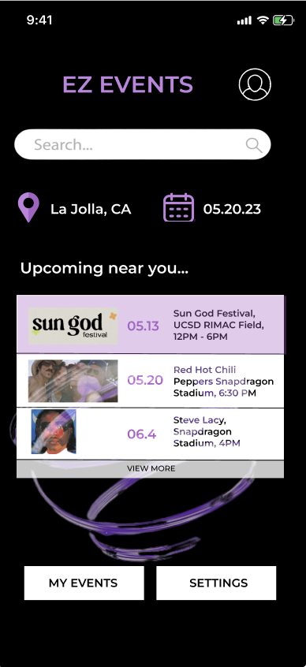
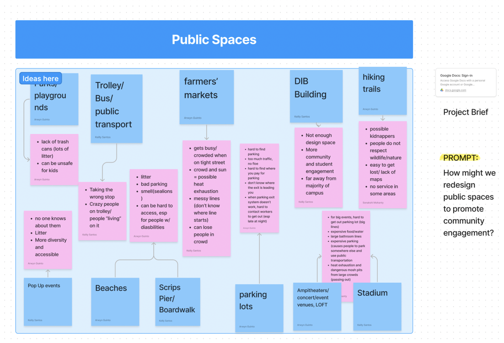
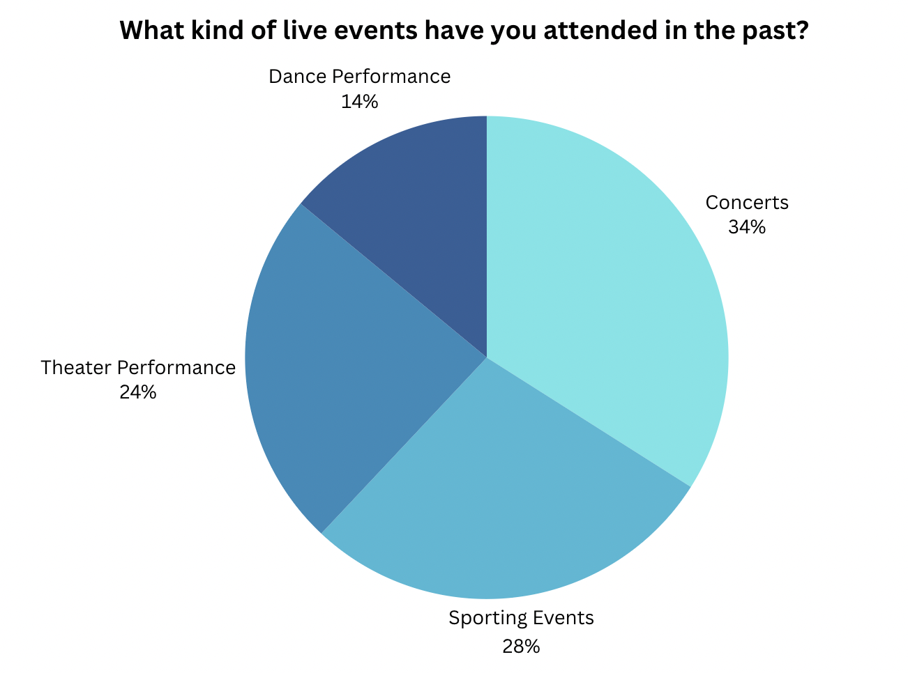
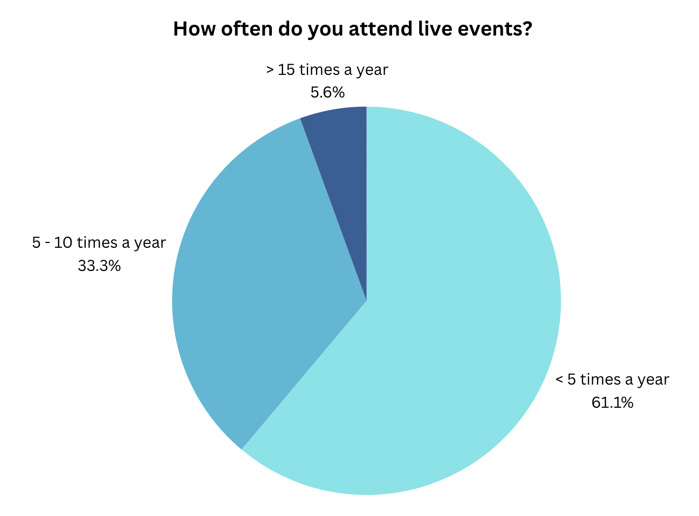
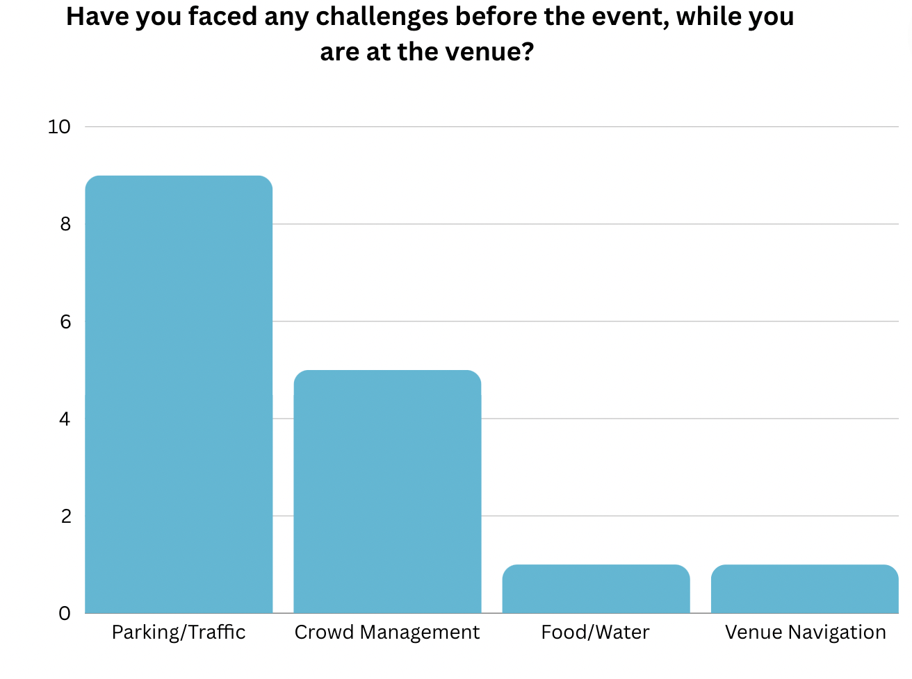
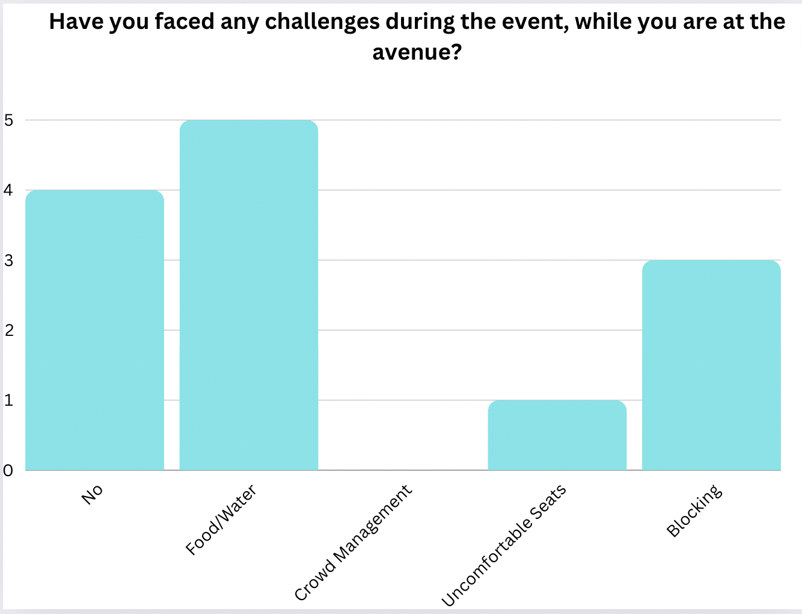
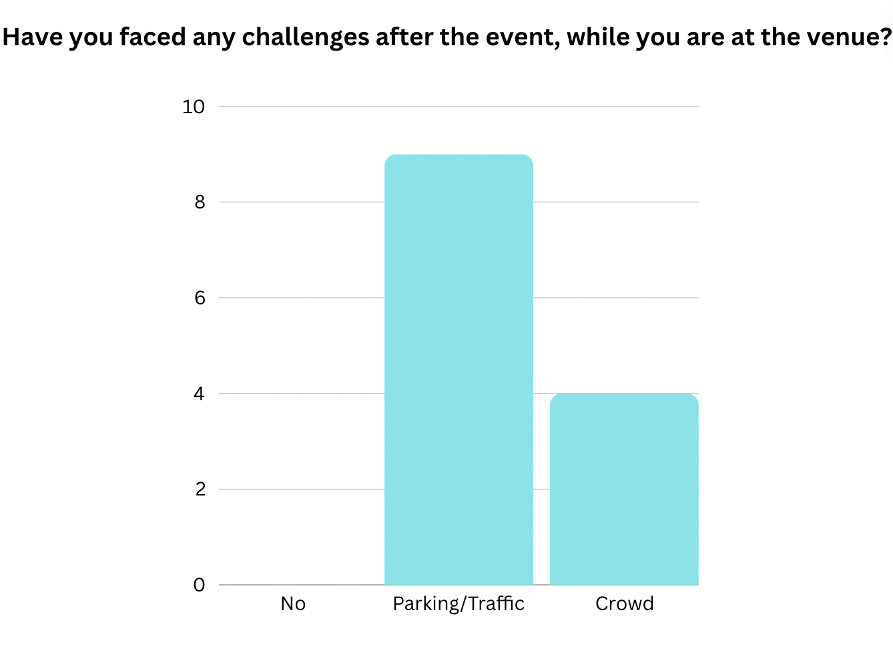
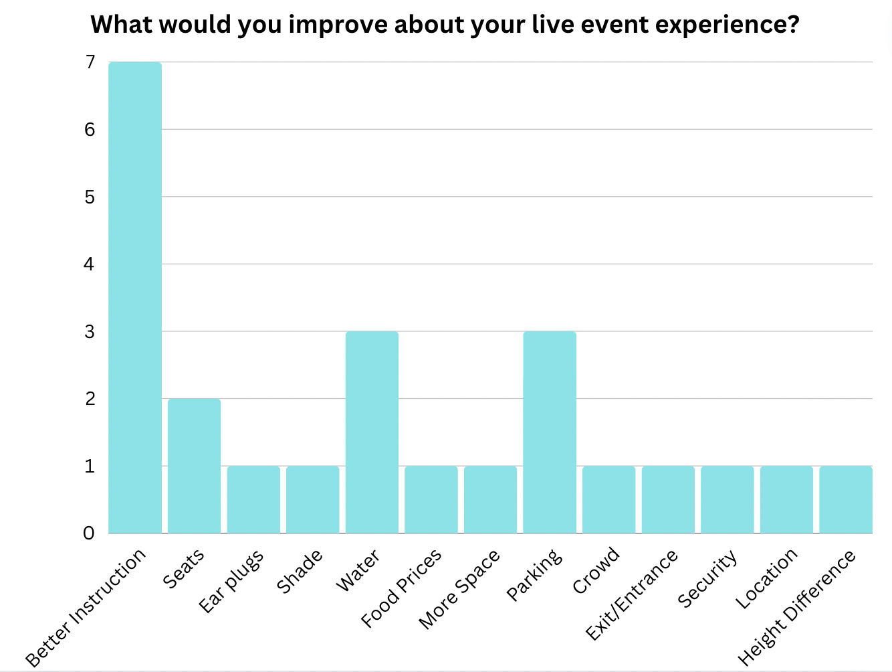
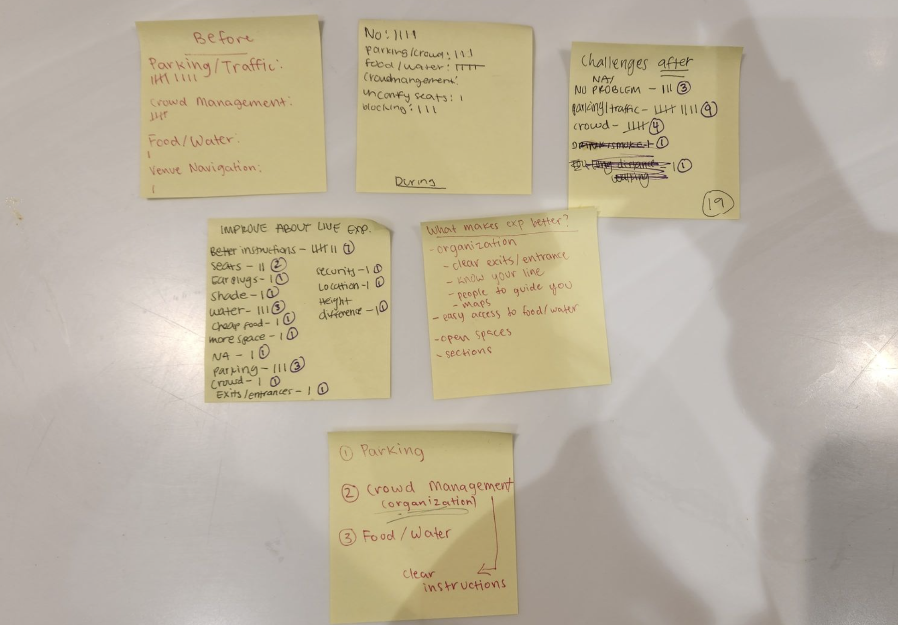

EZ Eventz
UCSD Design Frontiers 2023 — an app that provides live event goers a platform that has information all in one app

The Prompt
How might we redesign public spaces to promote community engagement?
Solution
EZ Events provide live event goers a platform that has event information all in one app. This app includes their ticket code, schedule of their event, map of different locations within the venue (bathrooms, seat location, food/water, parking, etc..), and a function where people can pin their parked car. EZ Events provide people easy access to venue information and a stress free experience.
Brainstorming
I decided on finding a design solution to solve the prompt of "How might we redesign public spaces to promote community engagement?" and created a brainstorm of different locations and their issues. I first brainstormed different public spaces that could be redesigned.

Initial Project Discovery
I decided on redesigning event venues since I love going to live events such as concerts and live sporting events. These venues include stadiums, arenas, festival grounds, concert halls, etc.. As a concert lover, I often wish all the information about the venue and performance would be listed in one place, rather than searching on multiple apps and websites.
White Paper Research
According to Worldmetrics.org:
- The live events industry is projected to reach a value of $1.57 trillion by 2028.
- The United States is the largest market for live events, with a value of $325 billion in 2019.
- 85% of event planners believe that technology helps improve the attendee experience.
Demonstrating that live events is a large industry that can be improved with technology.
User Research
We conducted an online survey to further understand user motivation and behavior.
Target Audience
51% of festival attendees are ages 18-34 according to Worldmetrics.com
Online Survey
We conducted an online survey to further understand user motivation and behavior for 18 respondents. Out of all the respondents, 55.5% were 18-19, 33.3% were in their 20s, and 11.1% in their 40s. 33.3% are males and 66.6% are females. These ages seemed to be a fair representative sample of typical live event customers. The survey asked respondents questions about their live event habits.
- What kind of live events have you attended in the past?
- How often do you attend live events?
- Have you faced any challenges before the event, while you are at the venue?
- Have you faced any challenges during the event, while you are at the venue?
- Have you faced any challenges after the event, while you are at the venue?
- What are some things about event venues that make your experience better?
- What would you improve about your live event experience? (think about both inside and outside the venue)






Affinity Map
An affinity map is often used to group similar observations together. We used it to surface several key issues common amongst participants.

Identifying the Problem
Trends and Errors Among Interviewees — the following issues stood out the most.
UX Suggestions & Redesign
The redesign focuses mainly on:
- Parking
- Organization (Crowd management)
- Food/Water